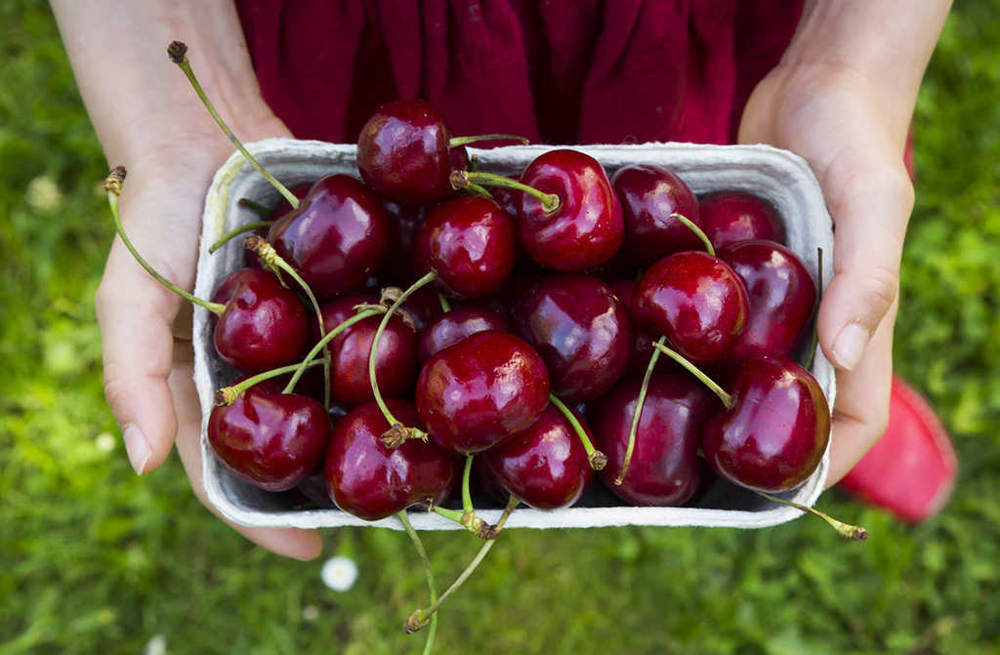

Algunas de nuestras especies

Napolitana
La cereza de Napoleon
La cereza Napolitana, es también conocida como Garrafal Napoleón, Su característica más destacable es su tono bicolor y forma alargada. Tiene color rojo sobre un tono crema. Su cruzamiento varietal es desconocido. Su obtención se sitúa en Alemania, en el año 1961. En su madurez puede alcanzar un calibre de 26mm. El contenido de azúcar es bajo y tiene un sabor escaso por lo que son muy utilizadas para la producción de licores y bombones

Sweet Heart
La estrella de la Finca
La variedad de cereza Sweet Heart, también conocida como 228 y Sumtare. Se trata de una variedad surgida del cruce de la New Star y la Van. Es una variedad autofértil, de gran productividad. El árbol es de porte erecto y de buena ramificación. El fruto es de color rojo brillante al momento de la cosecha, de pulpa rojo oscuro y muy buen sabor, de textura firme y forma acorazonada, con maduración a mediados de diciembre. Otra de sus ventajas es su rápida entrada en producción, buena para el transporte y recolección muy tardía.

Lapins
La mas intensa
Aunque Lapins sea una variedad de cerezo con más de 30 años de edad, por su gran capacidad productiva y su excelente resistencia al agrietado, continúa siendo una de las clases de cereza más plantadas. El nombre se puso en honor del profesor F.Lapins, obtentor de las primeras variedades de cerezo autofértiles. El color de la piel, en la madurez logra un color rojo oscuro, de sabor intenso. Firmeza: Lapins es una cereza firme y presenta una buena resistencia al agrietado. Se podría llegar a decir que Lapins es tolerante al cracking.